地政学
ルアンパバーンは王都の記憶を持つラオス北部の要地です。メコン川、山地国境、中国ラオス鉄道、観光投資が交差し、首都ではありません小都市が国家の歴史と対外接続を示します。内陸国の進路も映します。外交感覚も宿します。
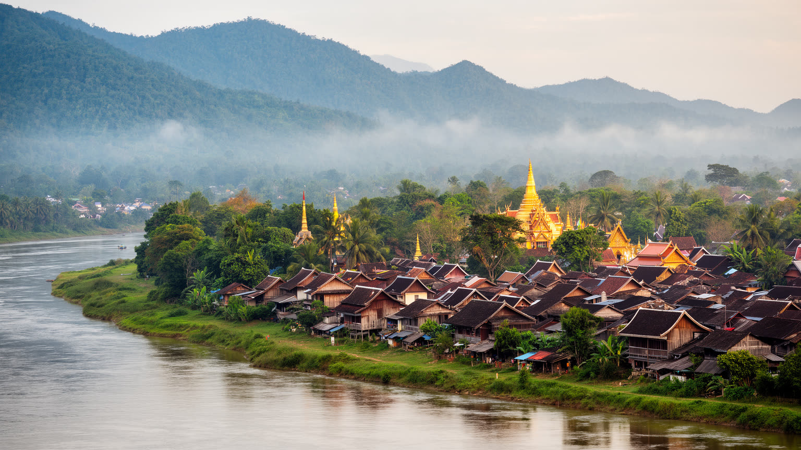
🇱🇦 ラオス / ルアンパバーン県 / World City Atlas
メコン川とナムカーン川に抱かれた旧王都。寺院、托鉢、王宮、仏領期の街路、夜市、山地民族の工芸、鉄道観光、静かな生活の保全が同じ半島で重なります。
都市の骨格
ルアンパバーンは、山に囲まれた川の半島に王権、上座部仏教、仏領期の住宅、観光宿泊、夜市、手工芸、周辺村落の生活が重なる都市です。
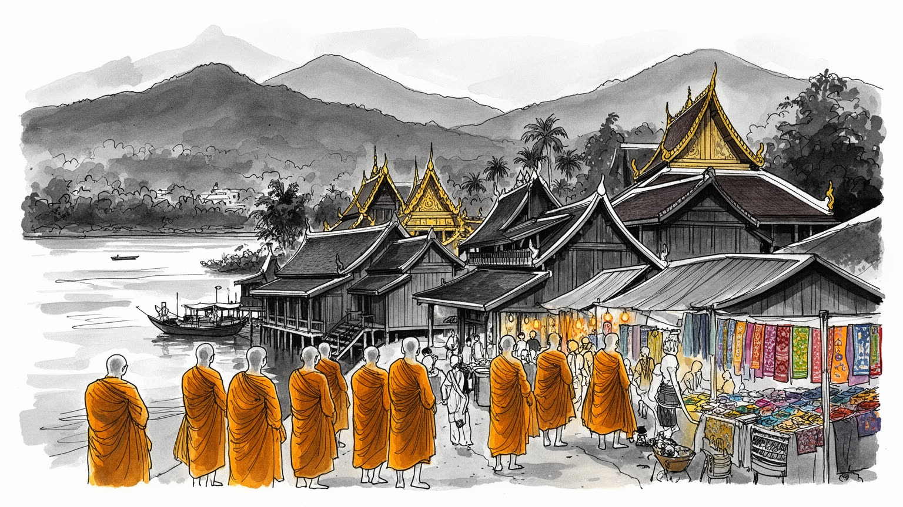
ルアンパバーンは王都の記憶を持つラオス北部の要地です。メコン川、山地国境、中国ラオス鉄道、観光投資が交差し、首都ではありません小都市が国家の歴史と対外接続を示します。内陸国の進路も映します。外交感覚も宿します。
収入は宿泊、飲食、ガイド、寺院保全、工芸、市場、農産物、空港と鉄道に広がります。観光の回復は雇用を生む一方、季節変動、土地価格、若者の移動も暮らしを揺らします。家族経営も多い町です。季節の差も深い。
托鉢、寺院、王宮、精霊信仰、仏領期建築、ラオ語と少数民族の工芸が街を形作ります。祈りは観光の演出ではなく、僧院教育、家族儀礼、村の暦と結ぶ日常の軸です。静かな所作が街を保ちます。観光との距離も問います。
旅行者は寺院、夜市、川辺、滝を巡りますが、住民には物価、通勤、学校、医療、洪水、家屋修繕が現実です。静けさを守る観光ほど、暮らしの余白を尊重する必要があります。滞在の質が問われます。歩く速度も大切。
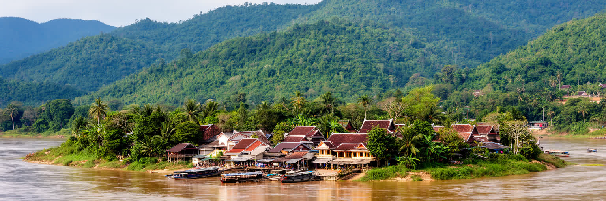
ルアンパバーンの街は、メコン川とナムカーン川が作る細長い半島を核にしています。山並みが近く、川霧の朝と強い日差しの午後が、低い屋根、寺院の階段、木造家屋、植民地期の通りに時間の層を与えます。大都市のような環状道路や高層街区ではなく、川岸、寺院、旧王宮、市場、船着き場、坂道、橋が、歩ける距離で都市の骨格を作ります。地形は美しさであると同時に制約でもあります。半島部では建物の高さ、屋根材、外観、用途が保全規則で管理され、過度な開発は景観だけでなく生活のリズムを壊します。周辺へ広がる新しい住宅やホテルは、旧市街の圧力を逃がす一方、交通、排水、土地価格、農地転用を変えます。川は観光の背景ではなく、物資、漁、洪水、信仰、岸辺の商いを結ぶ生活の通路です。乾季には朝の托鉢と市場が穏やかに見え、雨季には水位と道路の状態が住民の移動を左右します。ルアンパバーンを読むには、寺院の美しさだけでなく、川の増水、山からの水、橋の位置、船と道路の関係まで見る必要があります。小さな半島に王都、宗教、観光、住宅が集まるため、一つの建物更新や道路工事も都市全体の空気を変えやすいです。地形はこの街に静けさを与え、同時に成長を慎重に扱う責任を課しています。観光客が眺める川面は、住民には通学路、仕事場、洪水の記憶、供物を運ぶ道でもあります。その重なりを意識すると、景観保全は眺望だけでなく川辺に暮らす人の安全と尊厳を守る仕事になります。
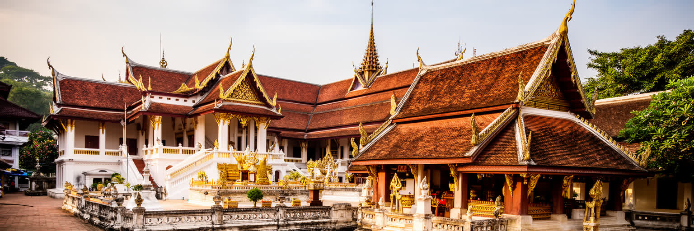
ルアンパバーンは現在の政治首都ではありませんが、ラオス国家を考えるうえで欠かせない王都の記憶を持ちます。ラーンサーン王国、王家、仏像プラバーン、旧王宮、寺院群は、国家の正統性、仏教、地域の誇りを街の配置に残しています。首都ヴィエンチャンが行政と外交の中心であるのに対し、ルアンパバーンは歴史的な権威と宗教的な深さを示す場所として機能します。王宮博物館や寺院を訪れる行為は、観光であると同時に、君主制、革命、社会主義国家、地域文化の記憶をたどる行為でもあります。過去を美しい景観だけに閉じ込めると、王権、植民地支配、戦争、革命後の変化を読み落とします。旧王都の価値は、国民国家の中心が一つではありませんことを示す点にあります。ラオスの山地と低地、仏教と精霊信仰、多民族社会、対外関係の複雑さは、この街の儀礼と建築に折り込まれています。観光客が静かな寺院を歩くとき、その背後には国家の成立、王家の記憶、仏教教育、地域住民の信仰が重なります。政治的な権力が移ったあとも、象徴の力は残り、祭礼や博物館、町並み保全を通じて現在の都市経済を支えます。ルアンパバーンは、行政中枢ではありませんからこそ、国家の歴史を生活の速度で読むことができる都市です。王都の記憶は単なる過去ではなく、地域の誇り、学校教育、観光説明、寺院の修繕資金、国家を語る言葉へ今も流れ込みます。静かな街路は、権力の場所が移った後も象徴が都市に残ることを教えてくれます。
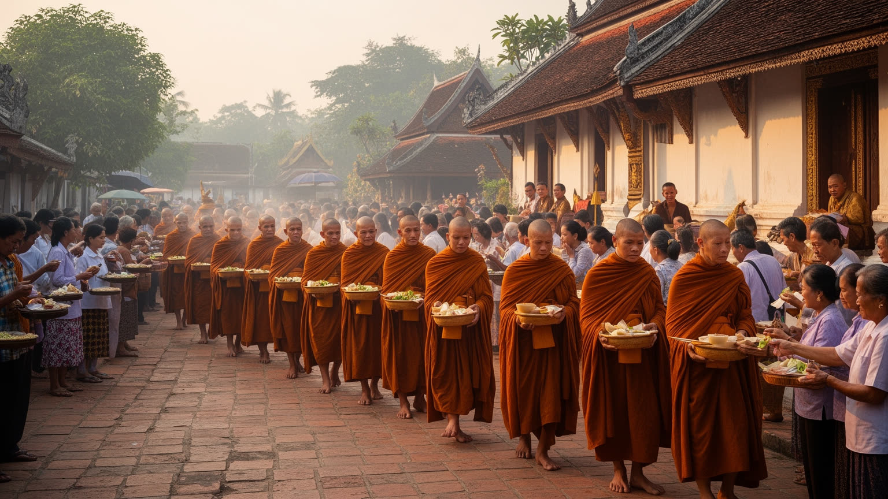
ルアンパバーンの朝を象徴する托鉢は、観光写真のための行事ではなく、僧院、住民、家族、功徳、食の分かち合いが結びつく宗教生活です。通りに僧が歩き、住民がもち米や食べ物を供える光景は静かに見えますが、その背後には僧院教育、村から来た若者、寺院を支える寄進、家族の祈りがあります。寺院は建築遺産であると同時に、学び、葬送、祭礼、相談、地域の記憶を抱える場所です。観光が増えるほど、托鉢は見られる儀礼へ変わりやすく、無断撮影、近すぎる観察、販売用の供物、通行の混雑が宗教の尊厳を損なうことがあります。宗教文化を守るには、訪問者のマナーだけでなく、宿泊施設、ガイド、行政、寺院、住民が共通のルールを持つ必要があります。ルアンパバーンの仏教は、仏像や屋根飾りの美しさだけではなく、毎朝同じ道を歩く身体の習慣として都市を作ります。そこには上座部仏教だけでなく、祖先や精霊への感覚、少数民族の儀礼、家族の生活暦も重なります。祈りが観光資源になる都市では、見せることと守ることの境界が常に問われます。托鉢の静けさを尊重することは、写真を控える礼儀にとどまらず、この街の時間を住民の側へ戻す姿勢でもあります。僧侶の列、供物を用意する家、早朝に道を掃く人、見守る子どもまで含めて、儀礼は共同体の仕事です。観光客はその仕事の外側から招かれているにすぎないという感覚が、都市の礼儀を支えます。
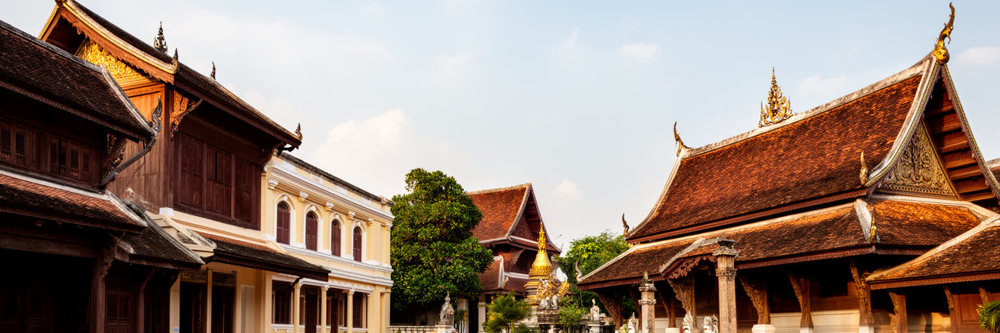
ルアンパバーンの世界遺産価値は、寺院だけでなく、ラオスの伝統家屋、仏領期の低層建築、街路の幅、屋根の勾配、庭、寺院と住宅の近さが一体で残る点にあります。保全とは建物を博物館のように凍らせることではありません。雨漏りを直し、木材や瓦を調達し、住民が台所や水回りを使い、店舗が営業し、僧院が学び続ける中で、景観の連続性を保つ作業です。観光収入は修繕の資金になり得るが、宿泊施設やカフェへの転用が増えすぎると、住む人の生活が押し出されます。外観規制は景観を守る一方、修繕費が高く、若い世代が家を維持できない場合もあります。遺産都市では、保存の成功が家賃上昇と商業化を呼び、守るべき日常を弱める逆説が起きやすいです。ルアンパバーンでは、建築の素材、色、看板、照明、排水、道路舗装、車両の進入が都市の雰囲気を左右します。美しい通りを歩くとき、そこには職人、行政、寺院、家主、観光事業者、国際機関の細かな交渉があります。世界遺産は称号ではなく、毎日の維持管理の制度です。街の価値を残すには、写真に映るファサードだけでなく、住民が暮らし、修繕し、商いを続けられる条件を守らなければなりません。保全規則が住民の負担だけになれば、建物は残っても生活は空洞化します。補助、職人育成、材料供給、相談窓口があって初めて、遺産は使われながら続く都市の資産になります。
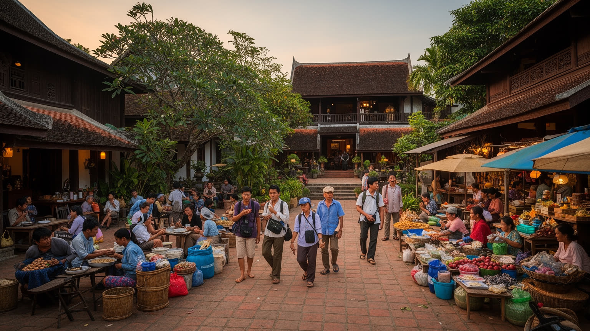
ルアンパバーンの経済は、世界遺産観光、寺院巡り、宿泊、飲食、ガイド、空港、鉄道、夜市、手工芸、周辺の滝や洞窟への日帰り移動に強く支えられています。訪問者が静かな朝、川辺のカフェ、夜市の灯り、木造家屋の宿を楽しむ背後では、清掃、調理、洗濯、送迎、翻訳、予約管理、修繕、庭の手入れ、僧院や寺院周辺の整理が続きます。観光は現金収入を生み、若者に英語や中国語、接客、運転、デジタル予約の仕事を与える一方、季節変動、感染症、燃料価格、通貨安、国際便の減少に弱いです。観光客の増減は、屋台の仕入れ、手工芸の売れ行き、家族の学費、地方から来た労働者の収入に直結します。高級ホテルと小さなゲストハウス、国際資本と家族経営では、利益の残り方も違います。観光地として有名になるほど、土地価格が上がり、旧市街の住宅が宿泊施設へ変わり、住民の買い物や寺院の静けさが圧迫されます。労働の質を高めるには、収益だけでなく、賃金、休み、技能訓練、言語教育、女性の働き方、若者が地域に残れる進路を考える必要があります。ルアンパバーンの観光は、消費される静けさではなく、多くの人の丁寧な労働で保たれる都市経済です。旅の満足度を高める仕事ほど、早朝や深夜に見えにくい形で行われます。都市が観光で生きるなら、その見えにくい労働が安く使い捨てられない仕組みを持つことが、遺産保全と同じくらい重要になります。
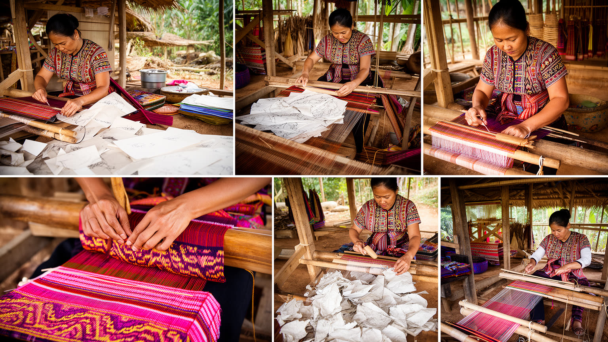
ルアンパバーン県は、低地ラオだけでなく、クム、モン、その他の山地民族の暮らしと深く結びつく地域です。旧市街の夜市や工房に並ぶ織物、刺繍、紙、木工、銀細工、籠、染色品は、観光土産である前に、山地村落の技術、女性の労働、家族の収入、祭礼や衣装の記憶を運んでいます。手工芸は伝統として称賛されるが、市場で売るためにはサイズ、色、価格、納期、デザインが外部の需要に合わせて変わります。観光客が安さだけを求めると、作り手の時間は軽く扱われ、仲介の力が強くなります。逆に、適切な価格、産地表示、技能継承、若い作り手の教育が整えば、手工芸は村に現金収入を残し、農業だけに頼らない生活を支えます。民族文化を消費する都市では、衣装や模様を美しい記号として見るだけでなく、誰が作り、誰が売り、収益がどこへ戻るかを見る必要があります。山地の村は観光の背景ではなく、川と道路、寺院の祭礼、市場、学校、医療、移動の問題を共有する生活圏です。ルアンパバーンの文化的な厚みは、半島の寺院だけで完結しません。周辺村落の言語、農作業、工芸、移住、若者の教育が旧市街の市場と結びつくことで、都市の小さな経済が成り立っています。工芸品を買う行為は、模様を持ち帰るだけでなく、作り手の時間と地域の知識を評価する行為でもあります。その視点があると、夜市は消費の場ではなく、山と川と町を結ぶ交渉の場として見えてきます。
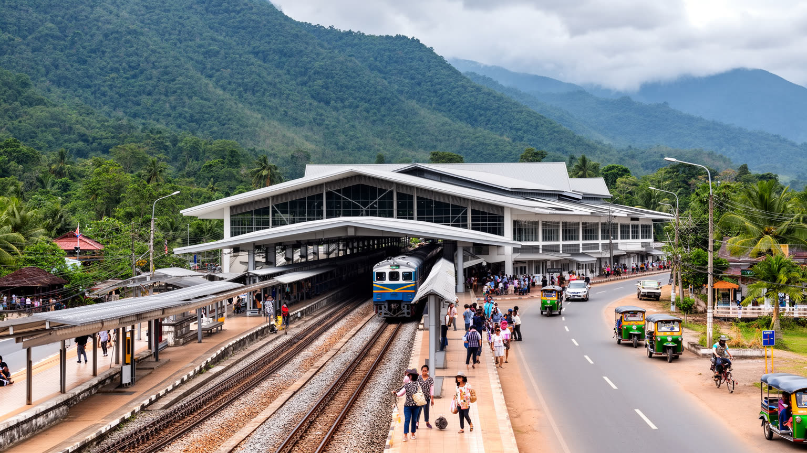
中国ラオス鉄道の開通は、ルアンパバーンの位置を大きく変えました。かつて長い山道や空路に頼った移動は、ヴィエンチャン、バンビエン、ウドムサイ、中国方面との時間距離を縮め、観光客、商品、労働者、投資の流れを強めています。鉄道は便利な入口である一方、駅が旧市街から離れているため、送迎、道路、運賃、観光バス、タクシー、公共交通の整備が都市の印象を左右します。速い接続は宿泊日数を短くし、日帰り化を進める可能性もあります。滞在が浅くなれば、寺院や市場を急いで消費する旅になり、地元の店や工房へ落ちる収入が偏ります。逆に、鉄道を使って周辺村落、自然、工芸、農産物、教育機会へつなげられれば、都市だけに集中しない地域経済を作れます。広域接続は地政学的な意味も持ちます。ラオスは内陸国であり、鉄道は中国、タイ、ベトナム方面への物流と観光の回路を変えます。外へ開くほど、土地取得、債務、環境、労働移動、言語の問題も近づきます。ルアンパバーンにとって大切なのは、速く来られる都市になることだけではありません。駅から旧市街までの移動、住民の通勤、学生の進学、農産物の出荷、観光の分散がうまく結びつくかで、鉄道の価値は変わります。線路は旧王都の静けさを壊す圧力にも、山地地域を支える新しい公共性にもなり得ります。駅前の開発が旧市街と断絶すれば、接続の利益は一部に偏ります。反対に、公共交通と地域市場が結びつけば、鉄道は小都市の暮らしを広げる道具になります。
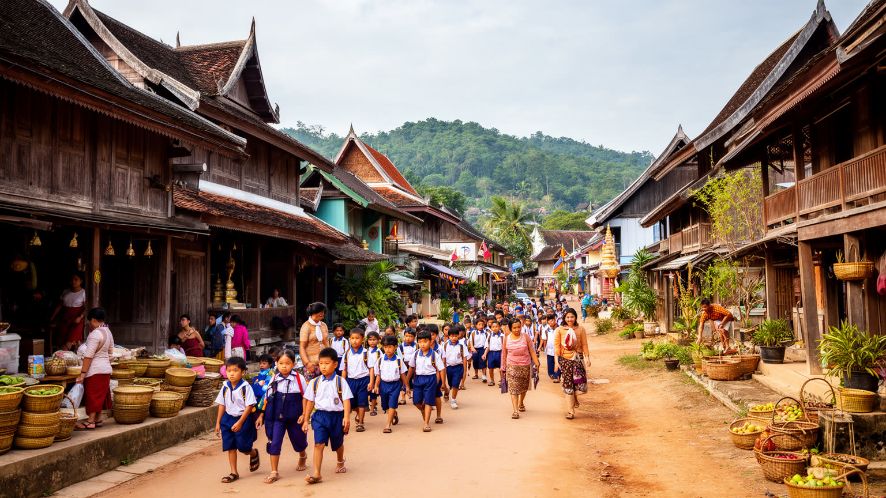
ルアンパバーンは穏やかな旅先として語られやすいが、住民にとっては学校、医療、家賃、家屋修繕、物価、交通、親族扶養、農村との往来が日々の課題です。旧市街の家は景観として価値がある一方、木材、瓦、排水、電気、水回りを維持する費用がかかります。観光収入を得られる家と、商業化で住みにくくなる家の差も広がります。中心部では宿泊施設、カフェ、土産物店が増え、日用品店や住民向けの店が少なくなることがあります。郊外や周辺村落に住む人は、旧市街の仕事へ通うためにバイク、トゥクトゥク、送迎車、徒歩を組み合わせます。雨季の道路、橋、排水、夜間の安全は、観光案内には出にくい生活条件です。若者は観光業で語学や接客を学ぶ一方、より高い教育や収入を求めてヴィエンチャン、タイ、中国方面へ向かうこともあります。高齢者には寺院と近所のつながりが支えになりますが、医療や介護の選択肢は限られます。静かな街の評価は、旅行者の心地よさだけで決められありません。住民が修繕し、子どもを育て、病院へ行き、寺院行事に参加し、川の増水に備えながら暮らせるかが、都市の本当の持続性を決めます。ルアンパバーンの生活を読むことは、保存された景観の中にある普通の家計と移動を読むことです。住む人が減り、働く人だけが通う旧市街になれば、祭礼も近所づきあいも弱くなります。遺産都市の将来は、観光の雰囲気より生活の根を残せるかにかかっています。
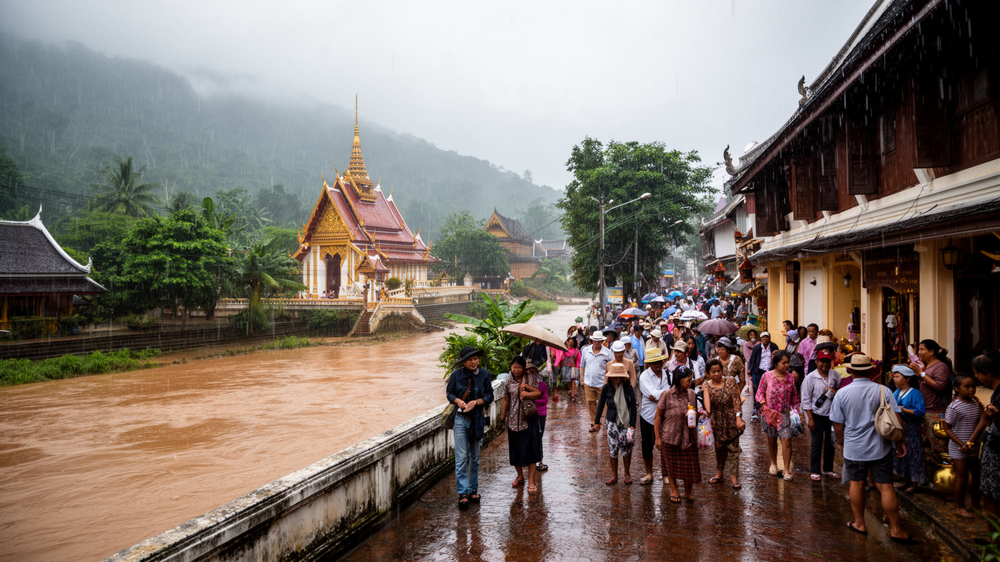
ルアンパバーンの美しさは、気候と観光圧力に対して繊細です。乾季の朝霧、涼しい夕方、川辺の散歩は旅の魅力ですが、暑季の熱、雨季の豪雨、川の増水、斜面からの水、湿気による建物劣化は住民と保全の現実です。木造家屋や寺院は湿気、白蟻、雨漏り、火災に弱く、修繕が遅れれば景観だけでなく生活空間も傷みます。観光が集中すると、托鉢の通り、寺院、夜市、滝、洞窟、狭い歩道に人と車が集まり、静けさ、信仰、清掃、排水、安全が圧迫されます。過剰観光は単に人数の問題ではありません。短時間で撮影だけを済ませる訪問、低価格競争、宿泊施設の過密、廃棄物、騒音、寺院マナーの低下が、街の価値を少しずつ削ります。気候変動は水害と暑熱を強め、保全費用を増やします。排水路、川岸の管理、緑陰、歩行者空間、車両規制、廃棄物処理、観光客への説明は、都市の質を守る基礎です。ルアンパバーンが静けさを保つには、訪問者数を増やすだけの成長ではなく、滞在の質、地域への収益還元、宗教への敬意、気候リスクへの備えを優先する必要があります。守るべきものは景観の写真ではなく、川と寺院の時間が住民の暮らしとして続く条件です。暑さや雨の負担は、屋外で働く人、露店、僧院、古い住宅に先に現れます。観光政策が本当に持続的であるためには、気候に弱い人と建物を守る投資を、宣伝より前に置く必要があります。
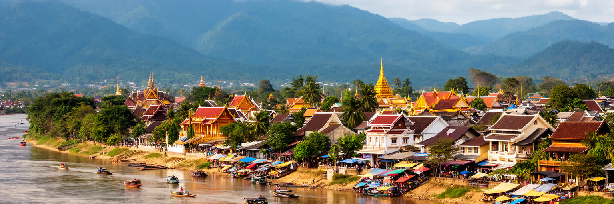
ルアンパバーンを理解するには、小さな美しい町として眺めるだけでは足りません。メコン川とナムカーン川の地形、旧王都の記憶、上座部仏教の托鉢、世界遺産の建築保全、少数民族の工芸、観光労働、鉄道による接続、気候リスクを同じ地図で読む必要があります。この都市の重要性は、巨大な人口やGDPではなく、ラオスという内陸国が歴史、宗教、山地社会、国際観光、外部投資をどう調整しているかを見せる点にあります。静かな寺院の通りは、国家の記憶であり、住民の祈りであり、観光産業の舞台でもあります。夜市の布や紙細工は、土産物であると同時に、山地村落と現金収入を結ぶ回路です。鉄道は便利さをもたらすが、滞在の浅さや土地価格の上昇も招きます。世界遺産の称号は誇りである一方、修繕費、規制、商業化、住民の生活をめぐる交渉を日々必要とします。ルアンパバーンの成熟は、観光客をさらに集める能力ではなく、祈りの静けさ、住民の住まい、作り手の収入、川と木造建築の保全をどこまで両立できるかで測られます。小さな都市だからこそ、ひとつの通りの変化が全体の印象を変えます。川、寺院、市場、駅、村落を分けずに読むことが、この旧王都の価値と弱さを理解する近道です。旅で感じる穏やかさは自然に残ったものではなく、住民、僧院、職人、行政が毎日調整している成果です。その努力を見えるものとして扱うと、都市の静けさは消費する対象ではなく、共有して守る公共財になります。